Manual de usuario
1Introducción
Aprilon es el sistema de gestión de rutas de reparto de Aprilon Textiles. Resuelve un problema concreto: cuando el recorrido diario se arma de memoria, se recorren kilómetros de más, no queda registro de lo entregado y cualquier imprevisto se entera tarde.
El sistema cubre el ciclo completo. Quien coordina carga las direcciones del día; el sistema calcula el orden más conveniente de las paradas teniendo en cuenta el tráfico; la ruta se publica y aparece en el teléfono del repartidor; y cada entrega se cierra con una constancia.
Este manual documenta todas las funciones. Si es tu primer contacto con el sistema, empezá por la guía de inicio rápido, que cubre lo indispensable en diez minutos.
Qué necesitás
Nada que instalar: el sistema se usa desde el navegador. En la computadora conviene una pantalla de 1024 píxeles de ancho o más para la vista completa; en el teléfono del repartidor hace falta GPS activo y datos móviles durante el recorrido.
2Roles y permisos
El sistema tiene tres roles, y cada uno ve una aplicación distinta al ingresar.
| Rol | Quién es | Qué puede hacer |
|---|---|---|
| Jefe | La dirección de la empresa | Crear, editar y eliminar cuentas de usuario; resolver pedidos de contraseña. |
| Administrador | Quien coordina el reparto (cuenta ventas) | Gestionar la agenda de clientes, armar y publicar rutas, seguir la operación y atender imprevistos. |
| Conductor | Quien reparte (cuenta expedicion) | Ver la ruta del día, seguirla en el mapa, cerrar paradas y reportar imprevistos. |
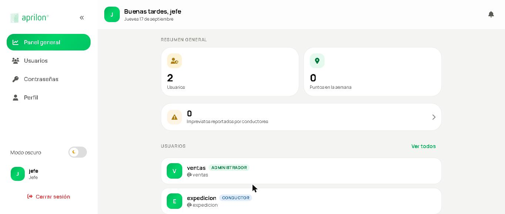
3Ingreso y cuenta
3.1 Iniciar sesión
Ingresá tu usuario y contraseña. El sistema valida las credenciales y te lleva a la pantalla de tu rol. Las contraseñas se guardan cifradas: nadie, ni el jefe, puede ver tu contraseña actual.

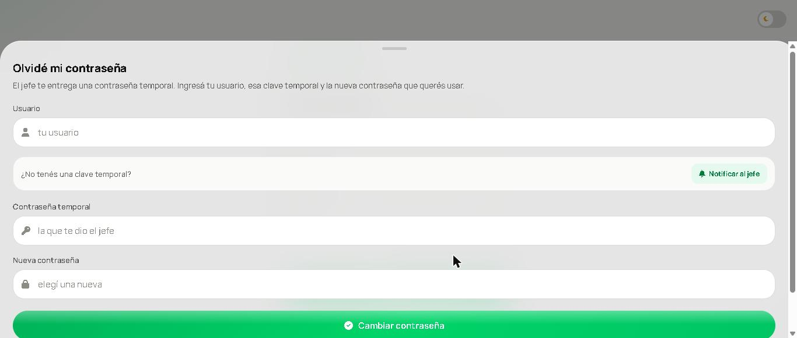
3.2 Primer ingreso con clave temporal
Si el jefe te generó una clave temporal, al entrar el sistema te obliga a definir una contraseña propia antes de dejarte usar la aplicación.
3.3 Olvidé mi contraseña
Desde la pantalla de ingreso pedí el restablecimiento. Queda registrada una solicitud pendiente; el jefe la resuelve generando una clave temporal que te comunica, y con esa clave volvés a entrar.
3.4 Foto de perfil
Cada usuario puede subir su foto desde su pantalla de perfil, y quitarla cuando quiera.
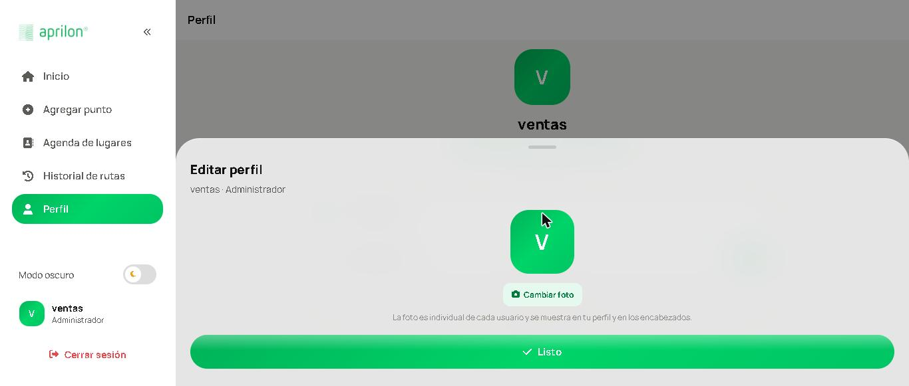
4Puntos de entrega
4.1 Dirección nueva o punto guardado
La pantalla Agregar punto tiene dos pestañas, y la diferencia importa:
- Dirección nueva: se usa solo en la ruta que estás armando. No queda en la agenda.
- Punto guardado: se elige de la agenda de clientes frecuentes, identificados por un apodo.
En ambos casos un único botón, Agregar a la ruta, actúa según la pestaña activa.
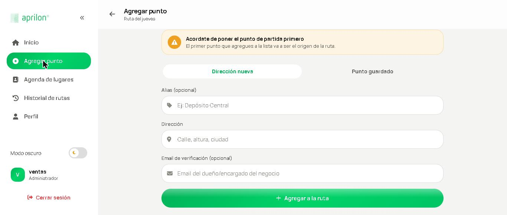
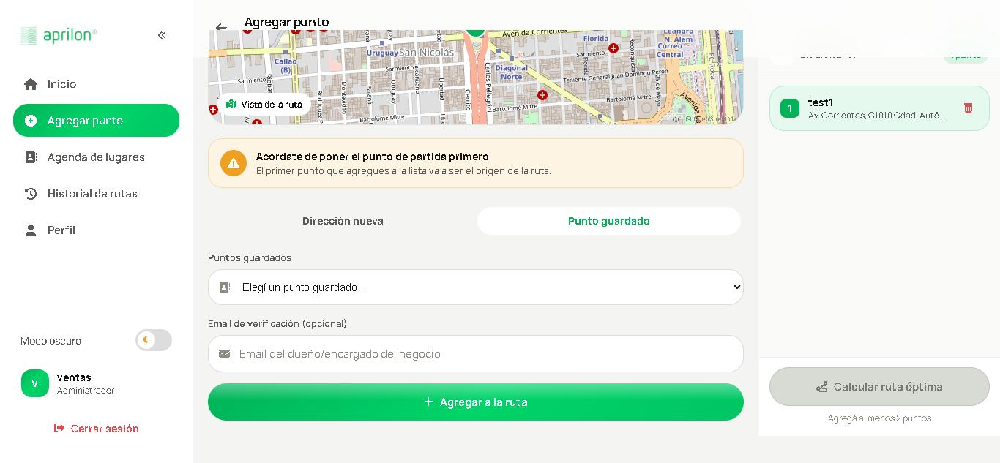
4.2 Autocompletado de direcciones
Mientras escribís aparecen sugerencias reales, y al elegir una el sistema resuelve sus coordenadas exactas. Mientras busca se muestra el indicador «Buscando…». Elegí siempre una sugerencia de la lista en lugar de escribir la dirección a mano: sin coordenadas el punto no se puede incluir en el cálculo.
4.3 El panel de la ruta
A la derecha aparece el panel En la ruta con los puntos que llevás cargados. Se muestra recién cuando agregás el primero, y se puede minimizar a una franja angosta para ganar espacio; al minimizarlo, el contador destella cuando entra un punto nuevo.
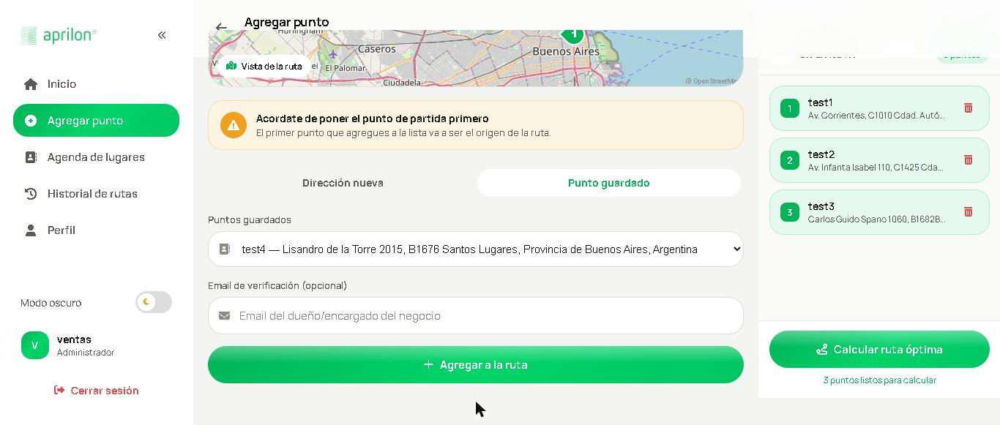
4.4 Administrar la agenda
La pantalla de lugares guardados lista los clientes frecuentes. Al eliminar uno el sistema pide confirmación, porque la acción no se deshace.
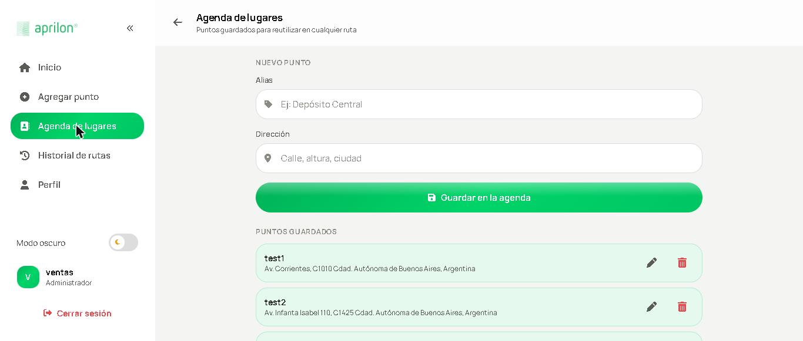
5Armado de rutas
5.1 Calcular la ruta óptima
Con dos puntos o más se habilita Calcular ruta óptima. El sistema consulta el servicio de rutas y devuelve el recorrido más conveniente, reordenando las paradas y considerando el tráfico del momento.
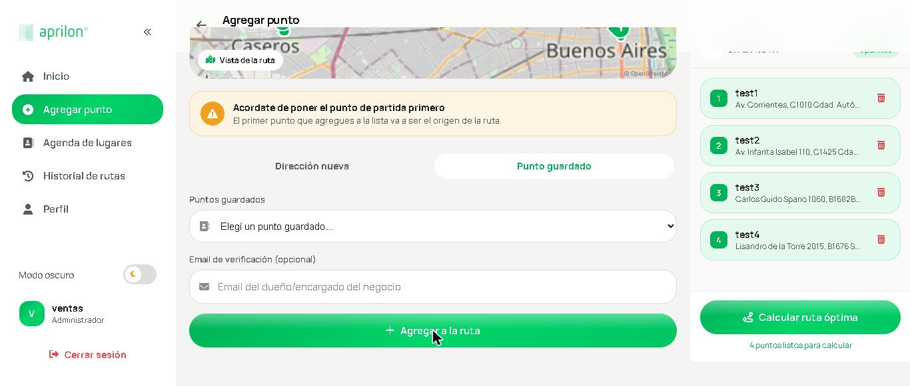
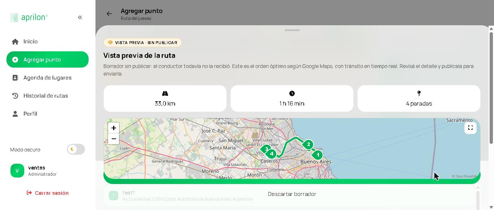
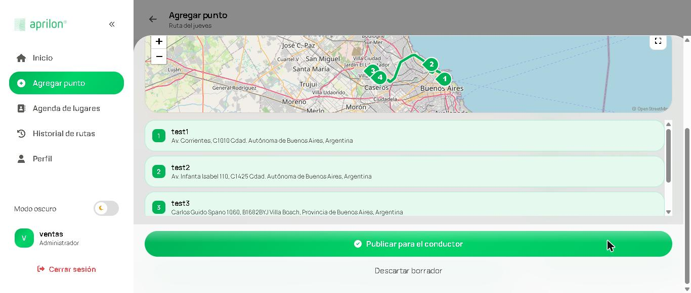
5.2 Publicar
Publicar la ruta la deja disponible para el repartidor y dispara los correos de verificación de las paradas que tengan email.
5.3 Despublicar y corregir
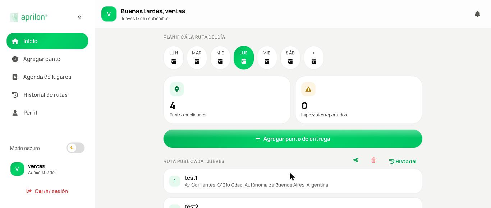
Una ruta publicada se puede despublicar, y deja de verse en el teléfono. Si quedaron rutas duplicadas del día, existe la opción de borrar todas las rutas de la fecha actual, cualquiera sea su estado, para empezar de cero.
5.4 Compartir
La ruta se puede compartir como texto plano, para pasarla por mensajería o dejarla registrada fuera del sistema.
6Verificación de entregas
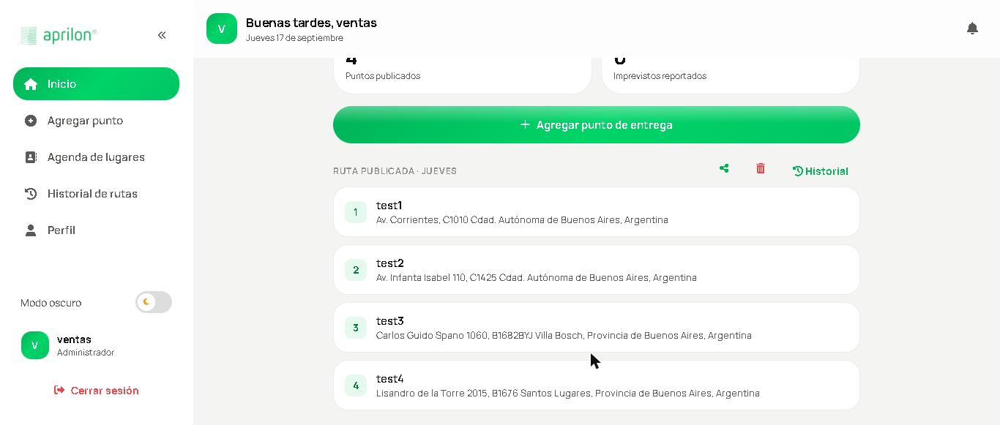
Es la función que convierte una entrega en un hecho comprobable.
- Al cargar un punto, completás el email del destinatario. Es opcional.
- Al publicar la ruta, el sistema genera una palabra al azar por cada parada con email y la envía por correo.
- Al entregar, el repartidor le pide esa palabra a quien recibe y la ingresa. Sin la palabra correcta, esa parada no se puede cerrar.
Cada intento fallido queda contabilizado. Si la ruta se vuelve a publicar, se genera una palabra nueva y la anterior deja de servir.
7Operación del repartidor
7.1 La ruta del día
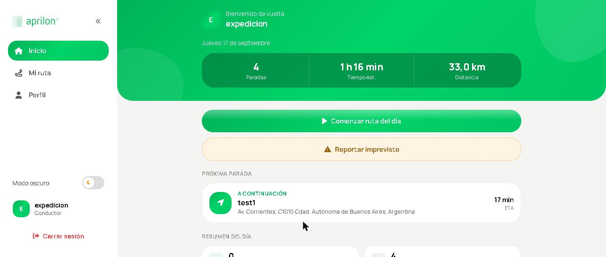
Al ingresar, el repartidor ve la ruta publicada con sus paradas en el orden calculado.

7.2 El mapa y el seguimiento
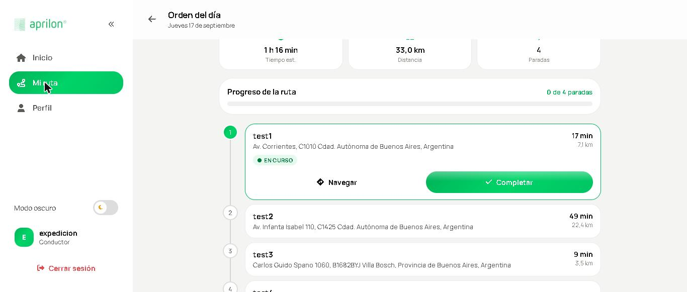
El recorrido se dibuja sobre el mapa y, con el GPS activo, la posición propia se actualiza sola. Si el navegador pide permiso de ubicación hay que otorgarlo: sin ese permiso el seguimiento no funciona.
7.3 Navegación paso a paso
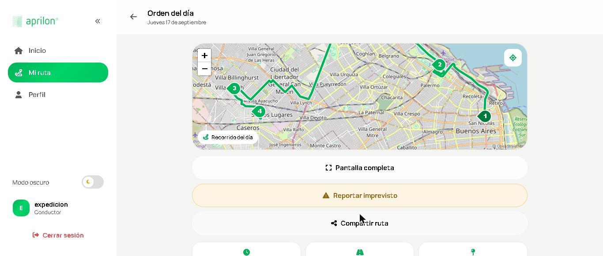
El botón de pantalla completa en el teléfono abre la navegación con voz en Google Maps. La navegación ocurre en esa aplicación, no dentro de Aprilon: no existe un servicio de navegación con voz gratuito para páginas web.
7.4 Cerrar una parada
Al entregar, se marca la parada como completada y queda registrada la fecha y hora. Si la parada tiene verificación, primero hay que ingresar la palabra.
7.5 Mapa sin señal
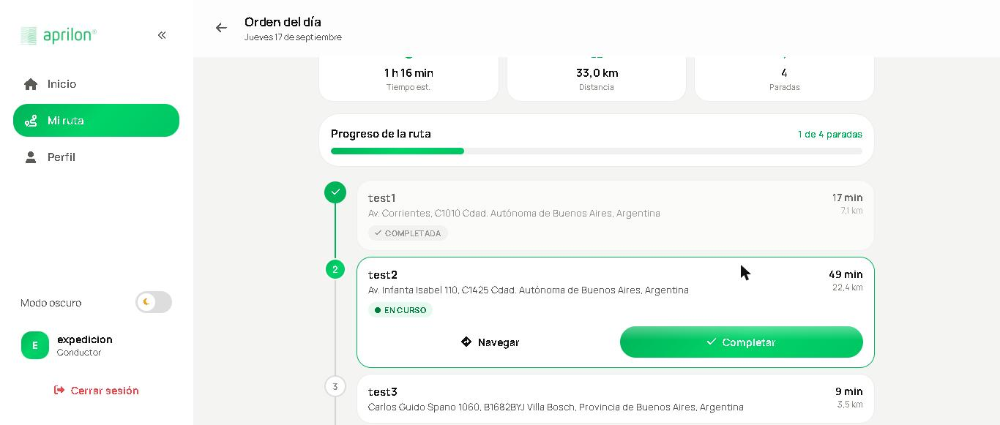
El sistema puede precargar el mapa del día para verlo sin datos, pero solo si está publicado con conexión segura (HTTPS). Sobre una dirección sin HTTPS el navegador no habilita esa función. Marcar paradas siempre requiere conexión.
8Supervisión e imprevistos
8.1 Reportar
El repartidor informa un imprevisto indicando el tipo y un detalle: calle cortada, cliente ausente, desperfecto.
8.2 Recibir
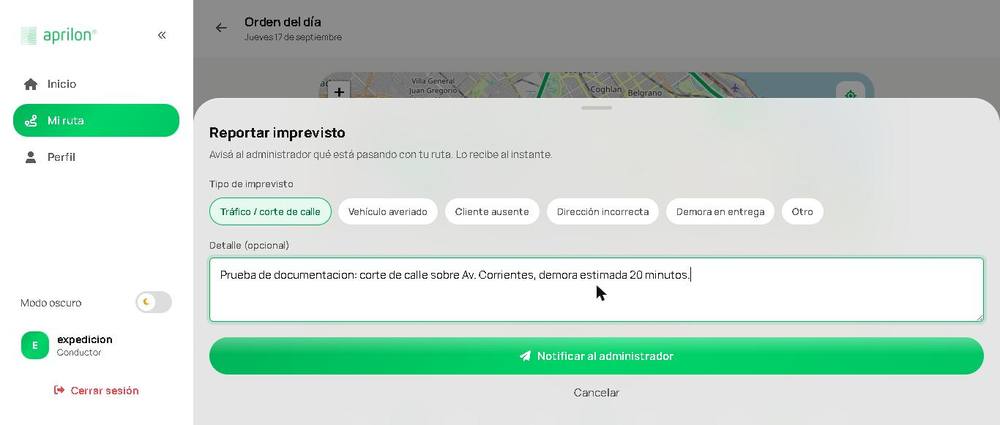
El administrador recibe el aviso en su panel, con notificación sonora, sin tener que recargar la pantalla. Cada aviso se marca como leído individualmente, para no perder de vista los pendientes.
8.3 Panel
La pantalla principal del administrador muestra indicadores del estado real de la operación del día.
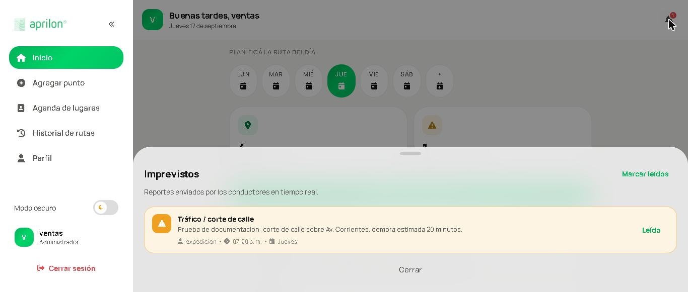
9Historial y planificación
9.1 Historial
Se pueden consultar las rutas de cualquier fecha, con sus paradas y su estado.
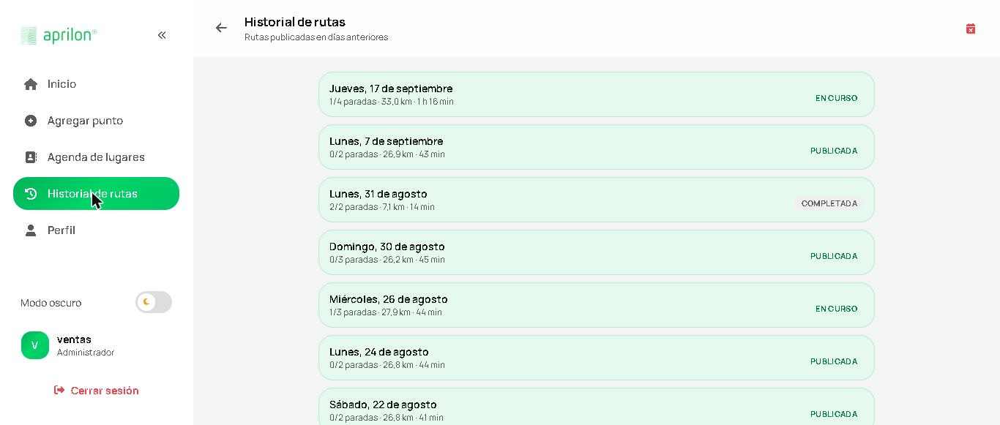
9.2 Rutas para días futuros
El ícono + al final de la tira de días abre un calendario para programar una ruta en cualquier fecha futura. Se pueden tener varias fechas programadas a la vez, cada una con sus propios puntos, sin que se pisen.
10Administración de usuarios
Funciones exclusivas del jefe.
10.1 Altas, cambios y bajas
Se crean cuentas indicando usuario, nombre, rol y zona, y se pueden editar o eliminar. Recordá que solo puede existir una cuenta de administrador.
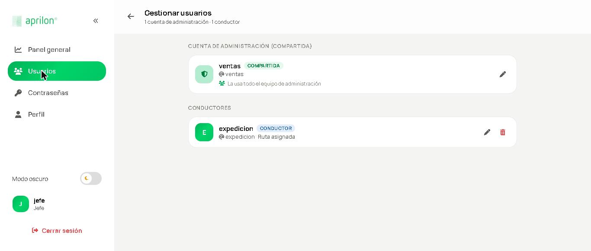
10.2 Pedidos de contraseña
Los pedidos de restablecimiento se resuelven generando una clave temporal, que se le comunica al usuario. El sistema lo obliga a cambiarla al entrar.
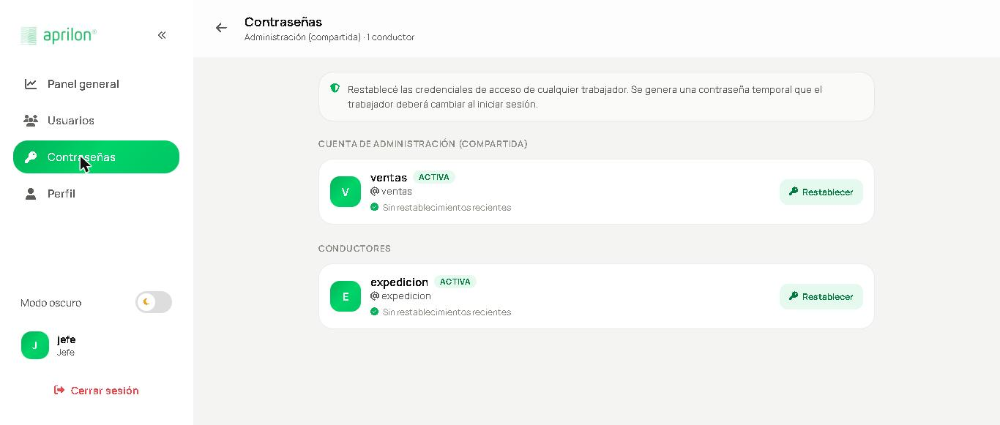
11Preferencias de interfaz
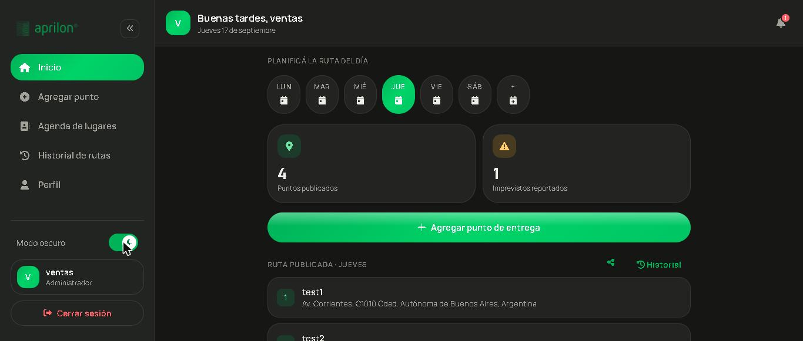
El sistema tiene tema claro y oscuro, a elección. El mapa se muestra siempre en modo claro, para que las calles sigan siendo legibles.
En escritorio, la barra lateral se minimiza a solo íconos con un botón, y la preferencia se recuerda en ese navegador. Las acciones que consultan al servidor muestran un indicador de carga.
12Instalación y configuración
Esta sección es para quien instala el sistema, no para el uso diario.
12.1 Requisitos del servidor
| Componente | Requisito |
|---|---|
| PHP | Versión 8 o superior, con PDO MySQL, cURL y OpenSSL |
| Base de datos | MySQL 5.7+ o MariaDB 10.3+, con utf8mb4 e InnoDB |
| Servidor web | Apache, nginx o IIS con PHP habilitado |
| Servicios externos | Clave de Google con Geocoding v4, Routes y Places; cuenta SMTP |
| Recursos | 512 MB de RAM y 100 MB de disco; internet saliente |
12.2 Base de datos
Creá una base vacía e importá los tres archivos de db/ en este orden, porque dependen entre sí:
aprilon.sql— usuarios y pedidos de contraseñarutas.sql— puntos, rutas, paradas y verificacionesincidentes.sql— imprevistos
Quedan creados tres usuarios de prueba con una contraseña común: jefe, ventas y expedicion.
12.3 Conexión y variables
La conexión se elige con una única línea require_once en config/comun.php, que apunta al archivo de conexión del entorno. En .env van la clave de Google y los datos del correo saliente.
12.4 Proteger los archivos sensibles
Las carpetas config/ y db/ y los archivos .env y .sql no deben ser accesibles por URL. En IIS eso lo resuelve web.config; en Apache hace falta un .htaccess equivalente, que debe existir antes de publicar el sistema en internet.
Además, la carpeta uploads/fotos necesita permiso de escritura para las fotos de perfil.
13Resolución de problemas
| Síntoma | Causa probable y solución |
|---|---|
| El botón de calcular está gris | Hay menos de dos puntos cargados. Agregá otro. |
| No aparecen sugerencias de direcciones | El servidor no está llegando al servicio de Google. Verificá su conexión saliente. |
| El mapa no sigue la posición | GPS apagado o permiso de ubicación denegado. Habilitalo en la configuración del sitio. |
| No llegan los correos de verificación | Revisá correo no deseado, la dirección cargada y la configuración SMTP del servidor. |
| La palabra de verificación se rechaza | La ruta se volvió a publicar y la palabra anterior venció. Usá la del último correo. |
| El mapa no funciona sin señal | El sistema no está publicado con HTTPS. Es condición para esa función. |
| Desapareció la pestaña de una fecha futura | Se recargó la página. Volvé a elegir la fecha en el calendario. |
| No deja crear otro administrador | Es intencional: solo puede existir uno. |
| Cambié algo y sigo viendo lo viejo | El navegador guarda la página en caché. Recargá forzando la actualización. |